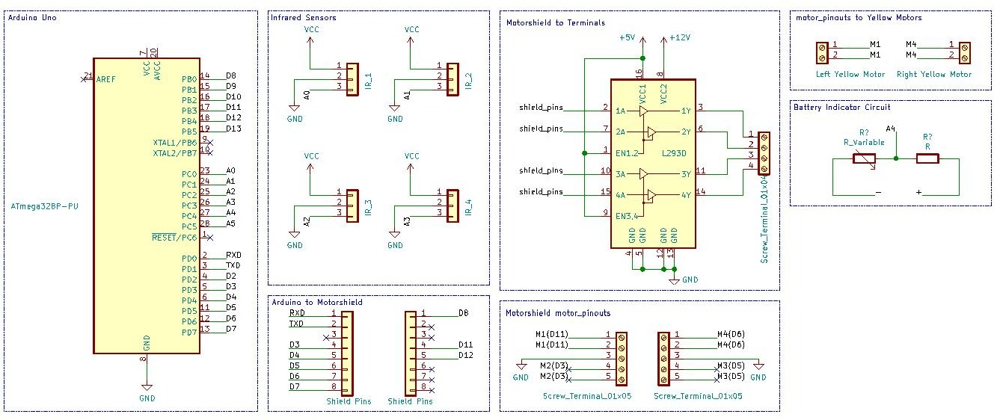

The line following car can track a black line on the plane surface and follow that black track. The project is designed for educational purposes. It is necessary to teach younger kids about technology and robotics engineering especially in such an underdeveloped country as Myanmar. It will be used as a learning aid and we hope it would provide the practical value of the S.T.E.M. education.
The physical design is made through fusion 360 and 3D printing. It is not an open source so we will not provide any file for that.
For electronics and schematics, it will be shown under along with the codes.
The project is made with Arduino Uno and other necessary components. The code is written with Arduino IDE and the total cost is about $40. The microcontroller chip "ATmega328p" can also be used with custom PCB but because of time limitation and design efficiency, the Arduino board is chosen.
The advantages of using it will be-
It is suitable with Motor Shield, thus making a compact design.
The Uno Board doesn't need external power source, it can draw power from Motor Shield.
The 13 digital pins and 6 analog pins are quite the amount of necessary pins.
The Motor Shield can control 4 motors and 2 servos at its capacity.
The advantages of using it will be-
Any kind of motor can be used: Unipolar, Bipolar, Stepper, Usual, etc. You name it.
It is user-friendly. All you need is to attach components to it.
At the start of the code, you have to add the library.
#define <AFMotor.h>
The number of motors and the pulse frequency can be determined by
AF_DCMotor motor_name (2, MOTOR12_64KHZ);
As in below, the Motor Shield is attached to Arduino Uno while the Infrared Sensor pins are attached to the analog pins.

The motor pins are connected with motor wires. Battery Indicator Circuit is made to know the voltage of the battery without the need of manual testing. The battery should provide a voltage of 12V.
The two yellow motors have a total of four wires (two wires for each one). Each pair of two-wires is attached to M1 and M4 respectively. It operates between 3V - 9V, the recommendation is 6V. It has about 15RPM. It is easily available and cost efficient to use.
We use 4 IR sensors: 2 for the detectation of black line, 2 for the white surface. The working voltage of infrared sensors is from 3.3V to 5V. It can detect the distance ranging from 2cm to 60cm. By adjusting the potentiomenter, that distance can be changed.
For the coding part, it is just normal input reading thing.
void setup() {
pinMode(infrared_sensor_pin, INPUT);
}
The sensor input can be analog or digital based on what your project aim is. The analog input can be used to measure distance while the digital input can be used for pure detectation.
void loop() {
int sensor_value=analogRead(infrared_sensor_pin);
}
OR
void loop() {
int sensor_value=!digitalRead(infrared_sensor_pin);
}
NOTICE that digitalRead() function has an "!" before it. It is because we are taking the inverse value of the input digital data. This is because the default digital input of the sensor is always "1" as long as it is not detecting any object and "0" when it detects an object. We want to inverse it so our code stays in its format.
The project is done by someone called "Sayar Duck G". To see full description of this project, please click on this link.